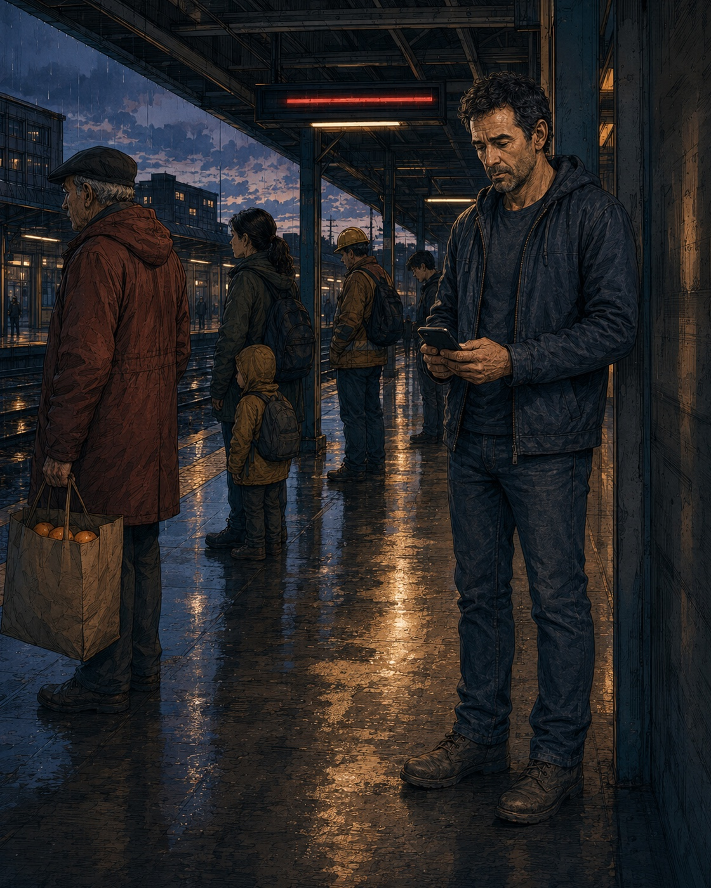
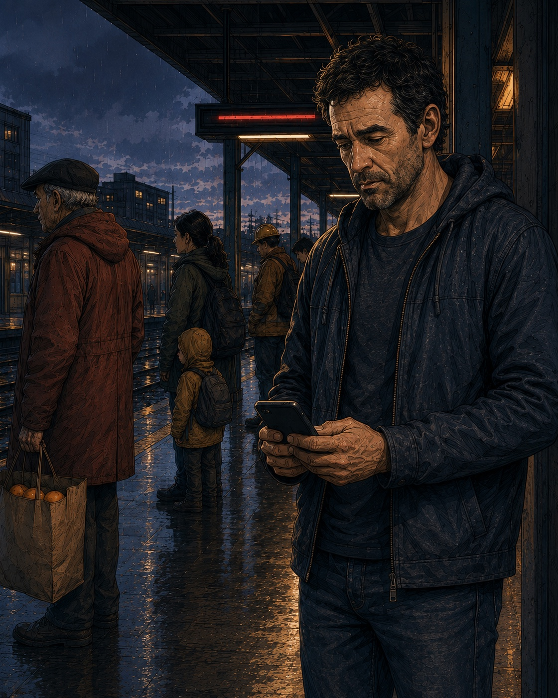
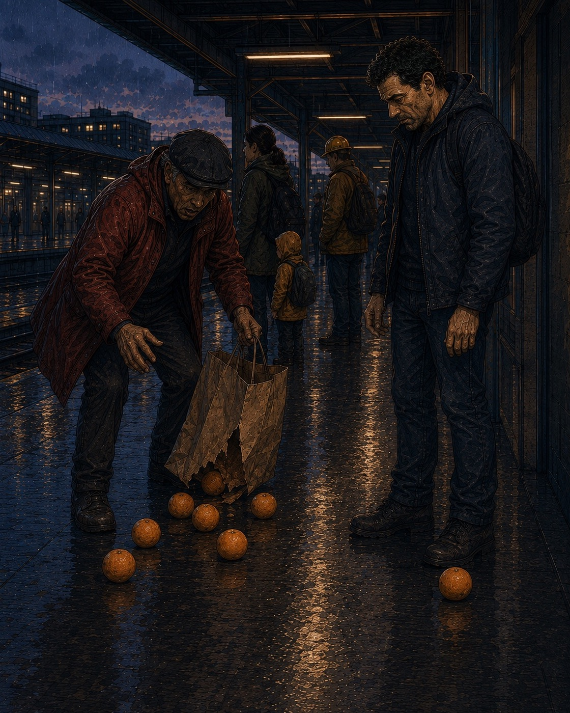
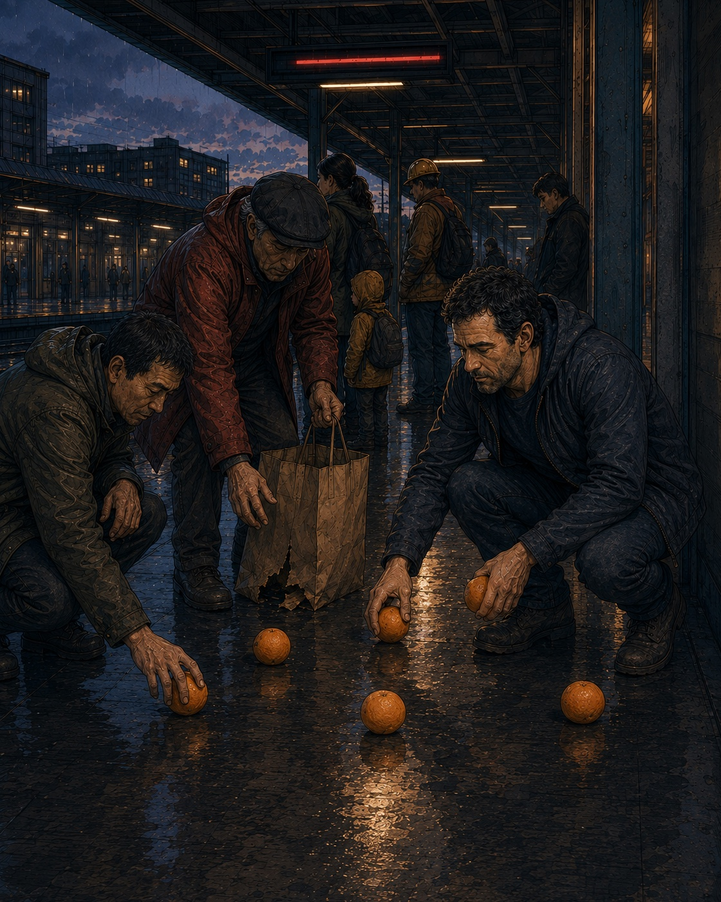

AN INTERACTIVE TONE COMIC
ONE
GONG
The day does not have to disappear
for the field to widen.
El día no tiene que desaparecer
para que el campo se amplíe.

Stephen checks the delay and an unanswered message. His shoulders draw inward as the view moves closer.Stephen mira el retraso y un mensaje sin respuesta. Sus hombros se encogen mientras el encuadre se acerca.
Reveals where the thought leads.Revela adónde lleva el pensamiento.I should be better at this by now.A estas alturas, esto ya se me debería dar mejor.
Why do I always end up back here?¿Por qué siempre termino otra vez aquí?
What is wrong with me?¿Qué me pasa?

I need this to stop.Necesito que esto pare.
Continues with one gong if sound is available.Continúa con un gong si el sonido está disponible.Continues without sound.Continúa sin sonido.
GOOOOONG
The delay remained.
The tightness remained.
The thoughts remained.El retraso seguía ahí.
La tensión seguía ahí.
Los pensamientos seguían ahí.
The tightness remained.
The thoughts remained.El retraso seguía ahí.
La tensión seguía ahí.
Los pensamientos seguían ahí.
But they no longer filled the whole field.Pero ya no ocupaban todo el campo.


Here — I've got these.Aquí... yo recojo estas.
Thank you.Gracias.
This one rolled over here.Esta rodó hasta aquí.
THEN THE DAY CONTINUED.UN GONG.
Y EL DÍA SIGUIÓ.
Return to the dayVolver al día Closes the comic and returns to the previous screen.Cierra el cómic y vuelve a la pantalla anterior.